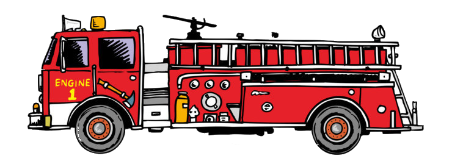

Firefighter/ Crew Manager
I am a versatile and diligent former Royal Air Force, Ministry of Defence and current contract firefighter/ crew manager, with 10-years technical expertise and comprehensive knowledge in aviation and structural firefighting. As a senior crew member and workshop supervisor to junior crew members, I systematically provide leadership in the operations of training and development, quality assurance and supervision. An inspirational leader capable of coaching and empowering junior firefighters, this enables them to fulfil their potential and ensure outstanding results on becoming qualified firefighters. I am a proactive and driven individual who takes pride in the standard of the work I produce.
| Firefighting | Emergency Medical Technician |
|---|---|
| Proficient in various firefighting techniques including road traffic incidents, hazmat incidents, domestic and aviation incidents. | Working to the level of intermediate life support to include CPR and various techniques to assist with airway management. |
| Experienced BA operative and BA entry control officer ensuring safety when operating breathing apparatus and awareness of risk management. | Experienced in patient assessments with knowledge of vital sign parameters and care pathways in the event of deviations, to include administering IM and oral medications. |
| Experienced in the servicing and maintaining of all types of fire extinguishers. | Trained and experienced in assessing and treating medical and trauma patients, to include stabilization of C spine, splinting and bleeding control. |
| Planning and delivering fire awareness briefs to civilian and military personnel, to ensure the relevant fire safety knowledge exists on Air Force installations. | Liaising with police, fire brigade, air ambulance, accident and emergency and members of the public to ensure effective patient treatment. |
| Responding in a timely manner to different types of emergency incident as either the fire appliance driver or crew member. | Using emergency response driving guidelines and the highway code to safely transport patients from scene of incident to further care and assistance. |
| Experienced pump operator with sound knowledge of fire appliance operations, basic maintenance and periodic testing. | Treating patients in a private environment with dignity and respect. |
| Proficient in use of fire ground radios, including communications with air traffic control while transiting an airfield. | Detailed documentation of patient’s medical condition and treatment, to ensure smooth continuous after care can take place |
Certified ICA0 crew manager IFTC (Feb 2023)
Certified firefighter in both aviation and domestic (Dec 2013).
Full UK & UAE driving license with category C+E, CPC and tachograph
Fire appliance emergency response driver qualified (Jul 2015).
2 Yearly breathing apparatus wearers assessment (Mar 2023).
Fire extinguisher maintainers qualification (Sep 2013).
Certified emergency medical technician with NHS ambulance service (Mar 2017).
Level 3 ambulance emergency response driver qualified (Apr 2017).
Advanced first aid and resus with Australasia fire and emergency college (Jan 2021).
Padi rescue diver qualified (2022).
| Firefighter/ Crew Manager/ Driver operator, SERCO, Al Minhad Airfield, Dubai From Oct 2020 - Present | Aviation/ structural firefighter on ICA08 military airfield, providing fire and rescue protection for NATO operations in the Middle East. Aviation and structural firefighting including fire protection for a 2000 pax refugee camp, post collapse of the Afghan National Government. Duties include: Driver/ pump operator - responsible for driving the airfield and structural fire appliances in emergency conditions and operate the on-board water pump at the scene of operations. BA operator - Part of a 2-man crew tasked with entering irrespirable and dangerous atmospheres to search for and save life, performing as either a team leader or number 2. BA entry control officer - Tasked with keeping a good line of communications with BA team and ensuring their safety, while documenting their firefighting operations. Hazmat - firefighting and rapid safe response to incidents involving military munitions, dangerous air cargo, bulk fuel installations and chemical spills. Control room duties including keeping an occurrence log, taking emergency calls/ radio transmissions from air traffic control and allocating fire resources to scene of emergency. Maintaining PPE to a clean operational standard. Servicing station fire extinguishers to manufacturers regulations. Promoting and delivering fire safety presentations to military and civilian personnel. Maintaining firefighting competences by completing a yearly training program. Periodic testing and documenting of fire service vehicles and equipment and using computer programs such as Excel to log records. |
| Firefighter/ Driver operator, DFRS, RAF Scampton, Lincoln From Oct 2017 - Oct 2020 | Aviation/ structural firefighter on an ICA06 military airfield providing a fire and rescue service for the RAF aerobatic team (red arrows), visiting aircraft and associated military installations. Firefighting duties include: As Al MINHAD duties. |
| Emergency medical technician, East Midlands Ambulance Service, Northampton From Jan 2017 - Oct 2017 | Certified EMT and worked as a dedicated member of emergency response teams delivering fast, quality care during medical emergencies, accidents, fires, natural disasters and other crisis scenarios. Passionate medical services provider able to remain calm under pressure and react swiftly in urgent and life-threatening situations. Worked in Northampton and surrounding areas, responding to 999 calls to provide pre-hospital urgent care, life support and patient transport. |
| Firefighter/ Driver operator, Royal Air Force, RAF Northolt, Ruislip From May 2013 - Dec 2016 | Aviation/ structural firefighter on an ICA08 military base providing a fire and rescue service for the RAF Royal flight, British cabinet members/ foreign dignitaries and visiting VIP aircraft and associated military installations. As an airman in the RAF, delegated for detachments to British military operations overseas. Firefighting duties include: As Al MINHAD duties. |
| Assistant Manager, Crossgar Auctions, Crossgar From July 2000 - May 2013 | Assisting the day to day running of a retail store and responsible for the effective management and welfare of staff as well as ensuring that all objectives were met with maximum efficiency at minimum cost and to the highest standards. Duties included: Opening and closing the store and ensuring the security of the building, professionally handling customer complaints to a positive outcome, maintaining an adequate stock level, always maintaining an appealing and organized store appearance, manage planned and unplanned absence, overseeing the receipt and dispatch of goods, customer service/ sales, going to the bank to lodge previous days takings. |